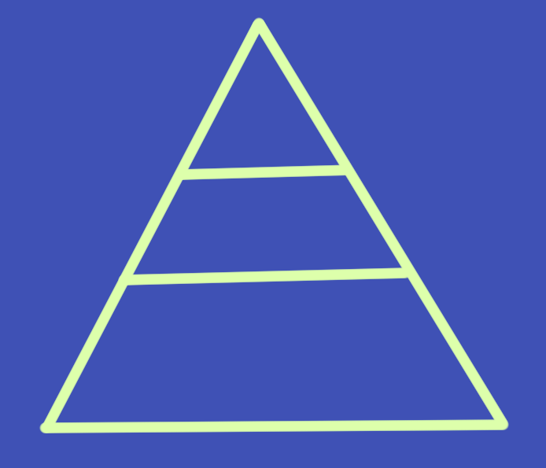

Qualidade de Software: Como e Porquê?
Marina Limeira
Ciência da Computação
Desenvolvedora
Mozillian
Usuário
Experiência
Segurança
Desenvolvedor
Legível
Reusável
Cliente
Entregue no prazo
Atenda suas especificações
O que faz um software de qualidade
no ponto de vista do desenvolvedor?
Cenário: Cadastro de Usuário
Quando eu inserir meu nome
E uma senha
E clicar no botão de registro
Então eu devo ser redirecionado para o menu principal
Bons commits
update class
x
Rename TestClass to TestMessage
Imagine que toda semana aparece uma pessoa nova no time...
Se imagine daqui a 6 meses adicionando uma funcionalidade nova ou tendo que refatorar...
Isso é papel do QA...
Tá, mas o seu time tem QA?
Funcionalidade nova, como testar?
fill_in 'Name', with: 'Marina'
fill_in 'Password', with: 'senha123'
click_button 'register'
Ruby + Capybara
Não garante 100%,
até porque você não pensou em todos os casos

Interface
Integração
Unitário
Teste Unitário
TDD (Baby steps)
Mocks
Teste de uma aplicação M.V.C.


Model
Relacionamentos estão ok?
Controller
Retorno 403 quando o usuário não pode acessar a página?
View
O usuário tem a mensagem de erro correta?
Testes de Interface
O usuário consegue realmente utilizar a plataforma?

Selenium
Integração Contínua
a.k.a. Continuous Integration (CI)
Entrega contínua, implantação contínua...
Isso é tópico para outra conversa :)
$ git push
$ rspec
$ jasmine
Só vai para produção se estiver tudo ok!
Resumindo,
faça testes e configure um serviço para integração contínua.
Faça o teste antes ou depois, MAS TESTE!
E lembre-se de executá-los.